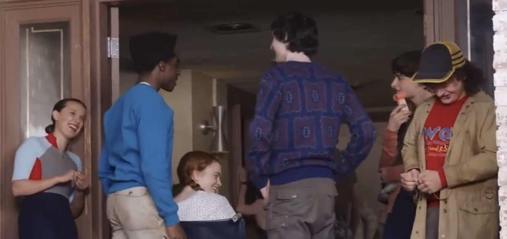

Featured Review
Television & Film
Beyond the Gate: The Definitive Review of Stranger Things 5
A veteran critic's comprehensive analysis of the epic conclusion that has redefined television. From the devastating love story of Lucas & Max to the viral "Conformity Gate" theory, this review explores how the Duffer Brothers delivered a final chapter that is both devastatingly ambitious and profoundly human.
Read Full Review